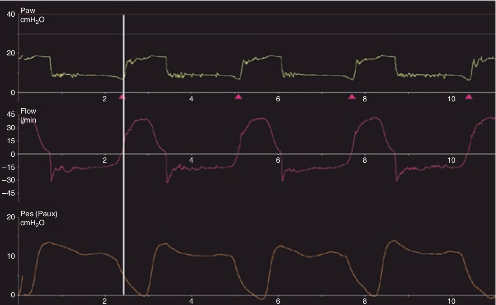

شیب کاهش PES و تغییرات این شیب در طی تنفس قابل تعمق است. افت اولیه خیلی تیز است و مروبط می شود به تلاش اولیه بیمار قبل از ترایگر کردن ونتیلاتور. با شروع و ادامه هواگیری ره ها، شیب این افت تغییر میکند. متعاقبا تلاش دمی کمتر میشود و اتساع ریه آغاز میگردد.

تمام موارد زیر صحیح است بجز یک مورد. در طی تلاش دمی، PES:
۱ - بصورت خطی کاهش می یابد
۲ - ضمن کاهش، شیب آن تغییر می کند
۳ - قبل از ترایگر شدن تنفس مکانیکی افت سریعی پیدا میکند
۴ - پس از ترایگر شدن، افت آن آهسته تر میگردد
۵ - در موارد اتساع مفرط دینامیک افت آن بیشتر است